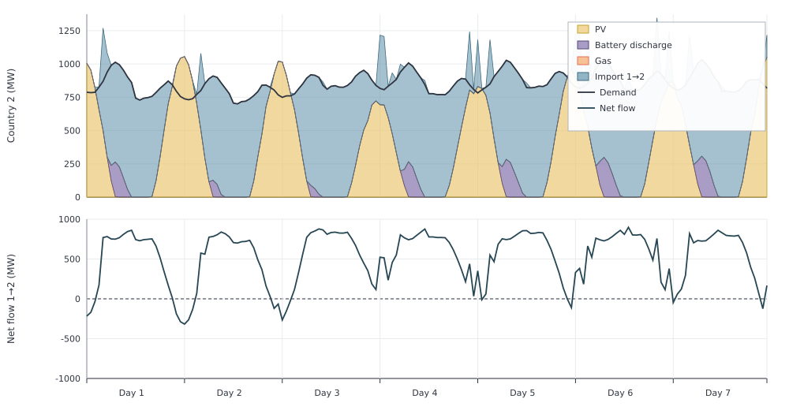
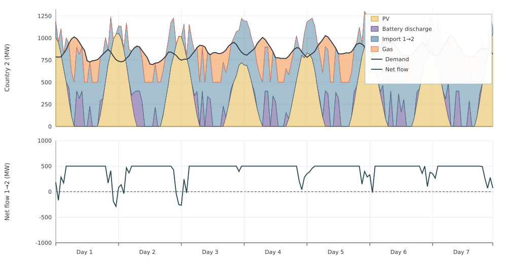

Two Countries
Two electricity regions trade across a makenodeinterco link:
- Country 1: demand and a large cheap CCGT
- Country 2: demand, PV, battery, and an expensive gas peaker
- Interconnection: node link compared without a limit and with a 500 MW limit
The interconnection moves energy from country 1 to country 2 most of the year; daytime PV on country 2 can reverse a slice of that flow.
Capacities are fixed and all costs except fuel costs are set to zero, keeping the example focused on dispatch and trade.
using Posy2
using Nosy
using HiGHS
import JuMP: set_silent
# Simulation and Posy2 input configuration
sim = Sim(Model(HiGHS.Optimizer); mesh=TimeMesh())
set_silent(model(sim))
example_data_dir = joinpath(pkgdir(Posy2), "data")
snapshot = Snapshot(sim, Dict(:posy => Posy2Options(
data_dir=example_data_dir,
techdata_file="tech_data.xlsx",
timeseries_file="time_series.xlsx",
tech_mode=:arguments,
timeseries_mode=:excel,
)))
# Electricity nodes for both countries and the CO2 emissions sink
country1 = Node("country1", EnergyCarrier("electricity country1", sim), rule=:curtailed, evalprice=true, tags=[:electricity])
country2 = Node("country2", EnergyCarrier("electricity country2", sim), rule=:curtailed, evalprice=true, tags=[:electricity])
co2 = Node("CO2", CO2Carrier("CO2", sim), rule=:curtailed, tags=[:co2])
# Hourly electricity demand in both countries
makedemand("Demand", "country1", country1, snapshot)
makedemand("Demand", "country2", country2, snapshot)
# Country 1: 1.5 GW low cost CCGT
makedispatchable(
"CCGT", "CCGT", country1, co2, snapshot;
cap=1500.0,
fuel_cost=47.06,
)
# Country 2: 1.2 GW PV
makeintermittentsource(
"Solar", "PV", country2, co2, snapshot;
cap=1200.0,
weatheryear=2019,
)
# Country 2: 400 MW, 4 hour duration battery
makebatterystorage(
"Battery", "Battery", country2, snapshot;
cap=400.0,
eff=0.85,
duration=4.0,
)
# Country 2: 1 GW Gas
makedispatchable(
"Gas", "Gas", country2, co2, snapshot;
cap=1000.0,
fuel_cost=90.0,
)
# Unlimited bidirectional interconnections
makenodeinterco("IC", country1, country2, Inf, Inf, snapshot)
# Minimise total system cost and extract solved values
optimize!(snapshot, cost(snapshot))
result = extract(snapshot)Annual generation already separates the two countries' plants. Country 1's cheap CCGT runs hard; country 2's free PV and battery discharge cover part of its load, and expensive gas fills only a residual:
julia> balance(result, "CCGT country1", :output, energy; collapse=true, aggregate=true)
1.2296100731717668e7
julia> balance(result, "Solar country2", :output, energy; collapse=true, aggregate=true)
1.6419079848000023e6
julia> balance(result, "Battery country2", :output, energy; collapse=true, aggregate=true)
341063.21817999927
julia> balance(result, "Gas country2", :output, energy; collapse=true, aggregate=true)
1.149265248220001e6A sample week on country 2 shows both nights dominated by imports and daytime reverse exports. The upper panel stacks PV, battery discharge, and imports against demand. Gas remains off during this week. Supply above demand is used for battery charging or reverse exports. The lower panel shows net interconnection flow: positive values are imports from country 1, while negative values are reverse exports from country 2.

To inspect annual trade in each direction, call balance with aggregate=false. For this interconnection, input is the flow from country 1 to country 2 and input2 is the reverse flow:
julia> annual_trade = balance(result, "IC_country1_country2", :input, energy; collapse=true, aggregate=false)
Dict{String, Float64} with 2 entries:
"input" => 5.87087e6
"input2" => 14275.7
julia> annual_trade["input"] - annual_trade["input2"]
5.856596189717646e6Although the flow reverses during some sunny hours, country 1 exports about 5.86 TWh net over the year.
500 MW transmission limit
Transfers from country 1 to country 2 exceed 500 MW in the unlimited case. Repeating the same study with 500 MW in each direction makes that transfer limit bind.
using Posy2
using Nosy
using HiGHS
import JuMP: set_silent
# Simulation and Posy2 input configuration
sim = Sim(Model(HiGHS.Optimizer); mesh=TimeMesh())
set_silent(model(sim))
example_data_dir = joinpath(pkgdir(Posy2), "data")
snapshot = Snapshot(sim, Dict(:posy => Posy2Options(
data_dir=example_data_dir,
techdata_file="tech_data.xlsx",
timeseries_file="time_series.xlsx",
tech_mode=:arguments,
timeseries_mode=:excel,
)))
# Electricity nodes for both countries and the CO2 emissions sink
country1 = Node("country1", EnergyCarrier("electricity country1", sim), rule=:curtailed, evalprice=true, tags=[:electricity])
country2 = Node("country2", EnergyCarrier("electricity country2", sim), rule=:curtailed, evalprice=true, tags=[:electricity])
co2 = Node("CO2", CO2Carrier("CO2", sim), rule=:curtailed, tags=[:co2])
# Hourly electricity demand in both countries
makedemand("Demand", "country1", country1, snapshot)
makedemand("Demand", "country2", country2, snapshot)
# Country 1: 1.5 GW low cost CCGT
makedispatchable(
"CCGT", "CCGT", country1, co2, snapshot;
cap=1500.0,
fuel_cost=47.06,
)
# Country 2: 1.2 GW PV
makeintermittentsource(
"Solar", "PV", country2, co2, snapshot;
cap=1200.0,
weatheryear=2019,
)
# Country 2: 400 MW, 4 hour duration battery
makebatterystorage(
"Battery", "Battery", country2, snapshot;
cap=400.0,
eff=0.85,
duration=4.0,
)
# Country 2: 1 GW Gas
makedispatchable(
"Gas", "Gas", country2, co2, snapshot;
cap=1000.0,
fuel_cost=90.0,
)
# Limit transfers to 500 MW in each direction at full availability
makenodeinterco(
"IC", country1, country2, 500.0, 500.0, snapshot;
atob_availability=1.0,
btoa_availability=1.0,
)
# Minimise total system cost and extract solved values
optimize!(snapshot, cost(snapshot))
result_limited = extract(snapshot)The 500 MW limit prevents country 2 from importing all of the lower-cost electricity available from country 1. During hours when the unlimited case would import more than 500 MW, the interconnection becomes saturated. Country 2 must then run its higher cost gas plant to meet the remaining demand. Over the same hours as the unlimited case, this appears as a flat 500 MW segment in the lower panel and a larger orange gas area in the upper panel:

The hourly flows confirm that the limit binds:
julia> unlimited_trade = balance(result, "IC_country1_country2", :input, energy; collapse=false, aggregate=false);
julia> limited_trade = balance(result_limited, "IC_country1_country2", :input, energy; collapse=false, aggregate=false);
julia> maximum(unlimited_trade["input"] .- unlimited_trade["input2"])
930.716
julia> maximum(limited_trade["input"] .- limited_trade["input2"])
500.0This congestion raises country 2's annual gas generation from about 1.15 TWh to 2.73 TWh:
julia> balance(result, "Gas country2", :output, energy; collapse=true, aggregate=true)
1.149265248220001e6
julia> balance(result_limited, "Gas country2", :output, energy; collapse=true, aggregate=true)
2.730122789995005e6The transmission limit therefore shifts generation from lower cost CCGT in country 1 to higher cost gas in country 2.